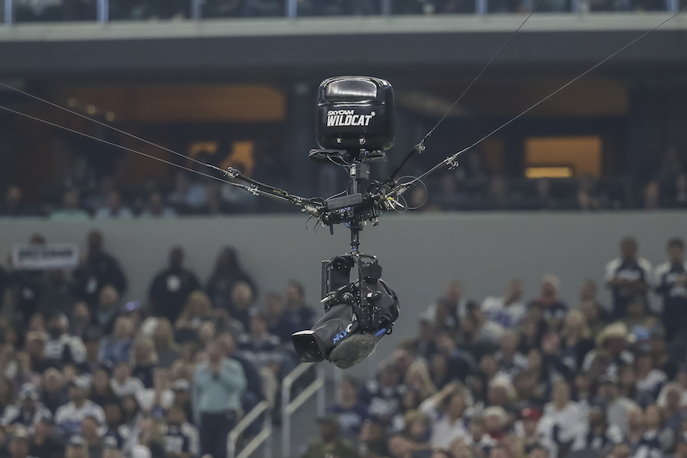

Before this, goal-line technology was introduced in football, which helped determine if
the ball crossed the goal line or not. It was only used when the referee couldn't rule a goal and to take a third opinion.
For more information, you can click on the link.
Flying drones and camera movements
Whenever we watch any sport, we usually witness different types of camera shots. The most amazing one is when the camera
flys and shows the view of the whole stadium or even a close shot of your favourite sportsperson.
For more information, you can click on the link.

Virtual Reality (VR) is an interactive virtual environment that uses cameras, sensors, joysticks, or costumes to immerse
you in a different world.
For more information, you can click on the link.